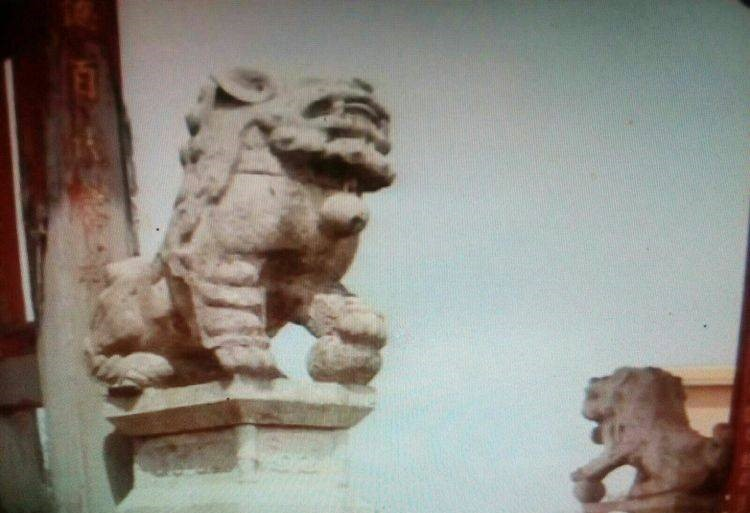

“风雨判云贵”，说的就是这个地方一一胜境关。
秦开五尺道，由川南入滇，从宜宾经豆沙关入滇省，谓之蜀身毒道。或由川西过金沙江，越博南，渡澜津向天竺，现称之为古西南絲绸之路。
自元始至明定天下，中原江准与滇省的交流逐渐完善了内地与边疆的第三条大通道，沿途设有驿站的官道，三征麓川，改土归流，軍垦戍边，移民迁徒，为通京大道。这条大道由黔入滇，在贵州盘县亦资孔与云南富源(平彝)县交界处至今尚保存一座箸名关隘：
入滇第一关：胜境关。
胜境关距富源县城7公里，320国道旁朝北一公里处，现存有景点:滇南胜境坊、关隘城楼、石虬亭、古驿站、石龙古寺、鬻琴碑、古驿道。
四月去盘县，再游胜境关。
十多年前来过胜境关，之所以再来是对此地此景仍存有很强的好奇心和探秘感。
此关傍倚百里大黑山，滇黔交界，山高菁深，雄关险隘。于此天分二界、黔阴滇晴、学过地理知道有“静止'鋒”一说，以此为界，也忒准确了吧！
明谪状元杨慎被贬永昌途经胜境关写道：“西望山平天豁，还观则箐雾瘴云，此天限二方也。”雨师好黔，风伯好滇，五百余年，概莫能外。‘
“滇南胜境”牌楼高十三米，宽十一米，重檐趐角，八楹柱。明朝景泰年间巡撫所建。朝东(黔)悬匾“黔江阴雨”。
朝西(滇)悬匾“万里晴空”，天分二界于此。
无论你是伫立于牌楼下，徜佯在驿道上或是立于关隘城楼上，你或许会想像忽必烈率千军万马渡过大渡河，绕过苍山，出胜境关直击南宋朝廷，或许会想像到沐英率三十万大军三征麓川经胜境关直到金齿国：你或许会想像到杨升庵“滇程记”中为胜境关写下不朽的篇章：还有天下第一奇人徐霞客、云贵总督林则徐为胜境关留下的诗篇……北望京师万里遥，骑马行舟三月余，时空穿越令人感慨！你或许还会为胜境关旁的320国道及沪瑞高速而感慨：万里京都一曰还。
“滇南胜境”牌楼楹柱东西各站立一对石狮。叫人称奇的是朝黔方向石狮遍身有明显的苔藓迹斑，而朝滇方向石狮则是石质本色，背上有明显的红土尘埃。十多年前來未曾认真看，此次与同行蔡老师专门认真观察，果然不虚。自然造化，如此神奇！

明治云南，军垦移民，设关、塘、哨、所、营、亦军亦民，所以历史沿革，现在许多地名仍沿用什么关，什么哨，什么营的称谓。如胜境关、老鸦关，刺桐关，曲砣关，碧鸡关。小哨，大哨，双哨。金刀营，豆腐营，刘家营，不胜枚举。
惟有胜境关不但遗址保存，历朝历代不断修缮，令人欣慰。
古道旁柏树列植，暮春时节，农家积肥于红土田间，其间几树桃之夭夭，景色迷人
胜境关重顶飞檐，城墙厚实，雄踞两山之间。
城楼西望，红土田野，山平路豁。
城楼东晀：山褐菁深，青草茵茵。
古道悠悠，可以牧牛。
这里不仅天分滇黔，地也分云贵。有一条小溪，东面黔方土壤是黑赭色，西面滇方土壤是红赤色。成为两省自然分界。
保存完好的古驿道
久违了，古驿道的牛车，浓浓的乡村景色。谁坐谁颠得慌。哈哈！
这可是通京官道啊，最好的路了，无论你是钦差大臣，皇親国戚，上京赶考的莘莘学子，还是山野村夫，能走这路就不错了。
早些年来时这道两旁是低矮破旧的房屋，烟燻火燎，且有人住，看得出这房屋有些年代了。想当年这里因通衢大道，南来北往，商贾云集，或打尖投宿，或匆匆赶路，官府大员，吆呵开道，莽汉村姑、急躲路旁……
而今这些何朝何代的老房屋已完全拆除，代之是仿古的建筑，宏图己经展开，景点尚未收费。
临街道南，有石虬亭，寺门上锁，守寺人留有手机号，呼之即來，开门让进。
石龙古寺与石虬亭，明清历代达官名人多有描述。
石龙古寺始建于明万历年间，道教寺庙，小巧玲珑，原寺中有八株古木，文革伐去七棵，仅存一株。坊间所称之为的“八卦树”，唉！还真被 八卦了。
据说在寺后高处看，树梢朝东处，遍佈青苔，朝西看，覆满红土。
不可错过的是石虬亭，亭前平地而盘缠形似蛟龙的石灰石石盘，如石碾般大，高出平地尺许，盘龙间泉水盈而不溢、，又如九曲流觞。
清水舀之又满，却不知出处，叫人称奇。
这又是胜境关又一未解之谜。
石虬亭供人歇息品茗，古代官驿就设于此。
值得大书特书的是鬻琴碑，碑述康熙年间，杭州府钱塘县人孙士寅出任平彝县令，两袖清风届满卸任，无钱返乡，百姓捐资，分文不取，只有卖掉上任吋带來的古琴。有诗赞曰：“百姓渐肥使君瘦，空囊只有焦桐售。”百姓勒石立碑于古道之侧。
胜境关怀古，不也是堂生动的廉政教育课吗?
古人有诗云胜境关：
彩云深处划滇疆，岭上茅分古亱郎。
北望帝京程万里，南瞻金马路遐荒。
……